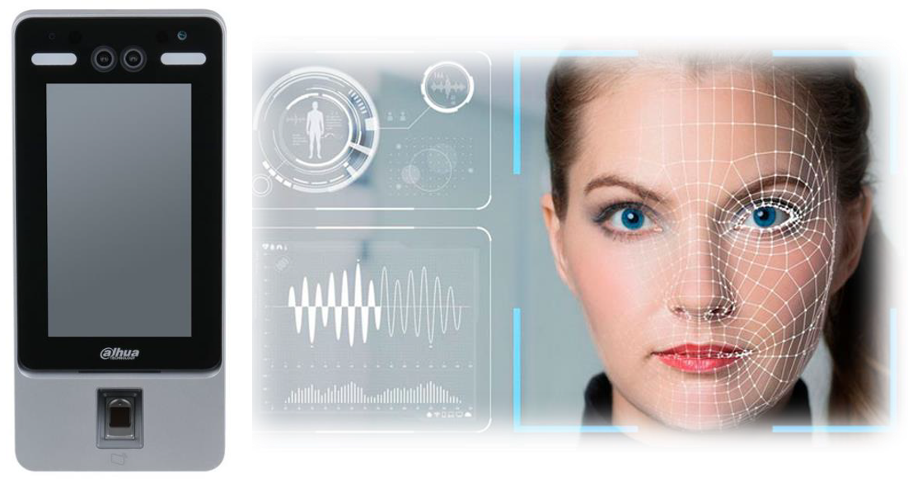
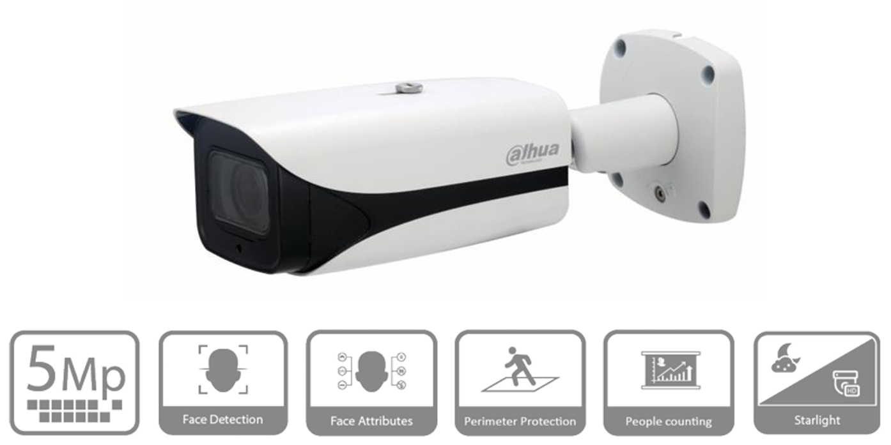

Apoyos Tecnológicos Disponibles
COOTRAVIR C.T.A.
SEGURIDAD PRIVADA
Tecnología de vanguardia para garantizar la seguridad de sus instalaciones
'"/>
Reconocimiento Facial
Sistema avanzado de reconocimiento facial para control de acceso y vigilancia.
Capacidad para identificar personas en tiempo real

'"/>
Cámaras Conteo de Personas
Cámaras de última generación con tecnología para contar y analizar el flujo de personas.
Monitoreo constante del aflujo de personas

Sistema de Monitoreo Avanzado
Plataforma de monitoreo centralizado con capacidades de análisis y alertas automáticas.
Visualización en tiempo real de todas las cámaras
Unidades Móviles Tipo Scooter
Motos y scooters equipados para patrullaje rápido y eficiente de áreas extensas.
Respuesta rápida a situaciones de seguridad
Todos los tecnologías están integradas en una única plataforma para una gestión eficiente de la seguridad